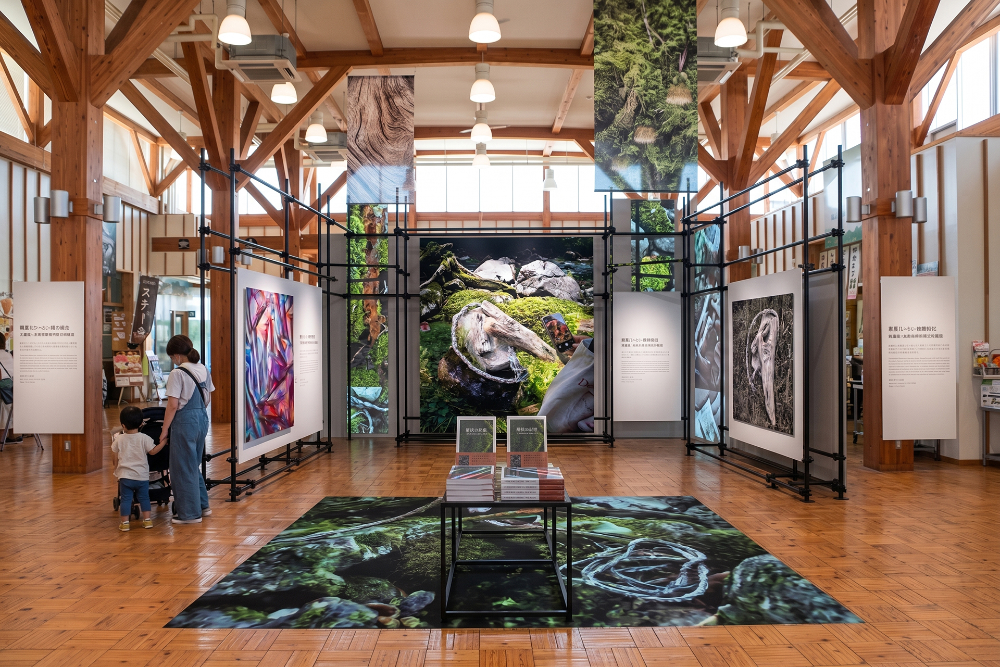

.jpg)
OVERVIEW
全体スケジュール概観
2026.09 — 2026.12
4つのフェーズで、
12月の発表まで
12月の制作発表展示会までを4つのフェーズで進行する。各項目には、成果物が「発酵＝ヒアリング・言葉の仕事」寄りか、「磁性＝設置・空間の仕事」寄りかを付した。
中間発表 10.25
あと–日
書籍 入稿／モックアップ 11月末
あと–日
制作発表展示会 12.14
あと–日
-
9中旬—10月中旬
PHASE 1 — 発酵
ヒアリング拡大期
紹介していただく語り手への個別訪問を開始。滞在の1日につき2〜3件のペースで10〜15名分の語りを確保し、書籍・広報誌連載・ミミクリの素材として並行整理する。
PHASE 1 -
1025日（日）
PHASE 2 — 中間発表
第2回ワークショップ（わくばにかほ）
ミミクリの試作原型、設置シミュレーション、書籍（仮）のラフ案を地域住民へ公開。掲載可否の同意確認もこの場で行い、11月の制作範囲を確定させる。
PHASE 2 -
11全4週
PHASE 3 — 磁性
本格制作期
書籍（仮）の執筆・編集（少なくともモックアップ）と、ミミクリの制作・設置を並行。12/14搬入から逆算し、11月末までに書籍の入稿またはモックアップを完成させる。
PHASE 3 -
1214—20日
PHASE 4 — 発表
制作発表展示会 ＋ トークイベント（にかほっと）
ミミクリの記録・書籍（仮）のモックアップを展示（12/14–19）。12/20には住民から聞いた物語と作品化プロセスを語るトークを実施し、1月以降の継続調査へつなぐ。
PHASE 4
CONCEPT — MIMICRY
擬態のインスタレーションミミクリ
MimicrySITE-SPECIFIC · MIMETIC SCULPTURE
風景に擬態し、
気づいた人だけが発見する
にかほの海岸・河原・田畑に転がる石、流木、漂着物。その大半を現地で採取した本物とし、陶で作る1〜2点の擬態彫刻を、見分けがつかないように紛れ込ませる。どれが作品かを見分けられない体験が、目の前の風景そのものを「作品かもしれない」という眼差しへ反転させる。
制作予定プラン解説をひらく-
01 — FOUND
採取する
浜・河原・田畑から、本物の石・流木・漂着物を選ぶ。展示の大半は本物。
-
02 — MIMIC
紛れ込ませる
陶でつくる擬態彫刻を、1〜2点だけ。見分けがつかないように混ぜて置く。
-
03 — REVERSE
反転する
気づいた瞬間、本物の流木までもが作品に見えはじめる。風景そのものが読まれはじめる。

IN 10 SECONDS — しくみを体験
この浜の流木12本のうち、陶でつくった作品は1本だけ。
本物0／ 作品0
どれが作品か、見分けられますか？ 流木をタップして確かめてください。
※ しくみを説明するための図です。実際の設置では、現地で採取した本物と陶の作品（1〜2点）を混ぜて置きます。
CONCEPT — MIMICRY
制作方法と、設置の考え方
.JPG)
.JPG)
01制作方法
- 大半は現地で採取した石・流木・漂着物を選んで用いる
- 制作するのは陶の1〜2点。苔、地衣類、風化、退色を型取りと手彩色で精密に再現
- 自然物だけでなく、護岸に紛れる生活道具の残骸など人工物も対象にする
02設置の考え方
- 物語に紐づく場所（語り手の家の裏庭、伝承の残る河原など）を優先的に選ぶ
- プレート（作品名・制作年・「属：地」）は案。会場のみで用いる場合もある
- 会場（にかほっと）周辺にも1〜2点を試験設置し、偶然の出会いを設計する

.jpg)
WORK PLAN — 制作予定プラン解説（全8章）
ミミクリMimicry
この風景のどこかに、作品がひとつ紛れています。
擬態の三者構造、モデル図鑑、制作工程、設置と展示の計画まで。制作予定プラン解説のページで、探してみてください。

住民ヒアリングを広げ、素材を蓄積する
9月中旬 → 10月中旬 ／ 語り手への個別訪問
第1回ワークショップで見つかった語り手への訪問を軸に、幼少期の物語・地域の伝承を継続的に収集する期間。同時に、集まった語りを書籍・広報誌・ミミクリへ翻訳する準備も進める。
Aヒアリング
- 週2〜3件のペースで個別訪問。10月中旬までに10〜15名分の語りを確保
- 録音（マイク等）・ノートに加え、現場（家・庭・田畑）の写真も撮影
- 対象者ごとに書籍／展示／広報誌の掲載可否を管理
B素材整理
- 語りを簡易テキスト化し、水・地形・儀礼・災害・動植物などのモチーフでタグ付け
- 共通するモチーフから「いと」の候補を抽出し、ミミクリと書籍の題材候補にする
C制作・広報
- 語りから設置場所・モチーフを選び、書籍の構成案づくりに着手
- 設置候補地（浜ギク53周辺、元滝伏流水など）を絞り込み、設置許可を打診
- 現地の石・流木・生活道具を採取・記録し、陶で作る1〜2点の原型サンプルを試作


B — 素材整理のイメージ
モチーフでたどると、語りが〈いと〉になる
語り手 0名
モチーフを選ぶと、同じ話をした語り手どうしが糸でつながります。
※ 図はイメージです。語り手の数（10〜15名）以外の、つながり方は説明のための例です。
.JPG)
地域に見せて、11月の優先順位を決める
10月25日（日）・わくばにかほ ／ 試作原型の質感を住民に確認してもらう
制作途中のものを地域住民に公開し、意見をもらう場。ここでのフィードバックが、11月の本格制作の優先順位を決める重要な分岐点になる。
OPEN公開する内容
- ヒアリングで集めた語りの抜粋（同意を得たもの）
- インスタレーション設置シミュレーション（模型、または現地写真への合成）
- 採取物の候補と陶の試作原型 — 質感の再現度を住民に確認してもらう
- 書籍（仮）のモックアップ案 — 目次構成、判型、ページ数の仮決定
CHECKその場で確認すること
- 語っていただいた内容の、書籍・展示への掲載可否（実名／写真使用の同意）
- 「もっと聞いてほしい話」「載せてほしくない話」の聞き取り
- ミミクリの設置候補地（語り手の裏庭・河原など）についての意向確認
- 参加者5名からの中間フィードバックを記録し、11月の制作方針に反映
同意の確認シート10.25 わくばにかほ ／ 記入のイメージ
「もっと聞いてほしい話」
「載せてほしくない話」
項目にチェックを入れてみてください。

入稿逆算で、書籍と作品を同時に仕上げる
12月14日の搬入から逆算し、書籍（仮）は少なくとも展示用のモックアップを11月末までに完成させる。印刷本とする場合は、既存の左美都本の製本仕様・印刷会社を踏襲すれば見通しを立てやすいが、秋田県内、理想的にはにかほ市内の会社を利用したい。形態・部数・印刷費は予算の確認後に確定する。
WEEKLY PLAN
| 週 | 書籍（仮） | ヒアリング・記録 | ミミクリ | 設置・会場 |
|---|---|---|---|---|
| W1 | 原稿最終ライティング（ヒアリング翻訳分）執筆 | 追加ヒアリング 文字起こしヒアリング |
採取・選定／ 陶の成形・乾燥成形 |
設置候補地の最終許可取得許可 |
| W2 | 装丁デザイン確定（左美都本のフォーマットを踏襲）装丁 | 掲載可否の最終確認同意 | 素焼き・本焼成（陶1〜2点）焼成 | 会場（にかほっと）下見・展示プラン確定計画 |
| W3 | 校正・モックアップ確定見本・入稿 | 録音・写真の整理記録 | 手彩色・現地設置テスト彩色・テスト | 設営什器・照明の手配手配 |
| W4 | 印刷・製本（印刷本の場合）印刷 | 展示用パネル準備展示 | 最終設置・撮影（プレートは案）設置 | 搬入動線・キャプション原稿作成搬入準備 |

※ 写真は展示イメージです
発酵と磁性を、ひとつの空間に並べる
12月14–19日 展示（にかほっと） ／ 12月20日 トークイベント
ミミクリのインスタレーション記録写真、書籍（仮）のモックアップを展示空間で発表する。会場では左美都本（長野・左美都の既存書籍）も参考展示し、〈いと〉〈洞窟〉のコンセプトがにかほ・長野の両側から立ち上がる構成にする。
12/14–19展示会
- インスタレーション記録写真、書籍（仮）のモックアップ、にかほヒアリングの抜粋を展示
- 左美都本（長野・左美都の既存書籍）を対の展示物として併置し、二つの土地の物語を並走させる
- 会場周辺の実景にミミクリを1〜2点設置し、来場者が気づかぬまま通り過ぎる仕掛けをつくる
- 会場アンケートを設置し、続きを聞かせてくれそうな住民を掘り起こす
12/20トークイベント
- 住民から聞き取った幼少期の物語を紹介
- 物語を書籍・インスタレーション（ミミクリ）へ翻訳したプロセスを語る
NEXTこの先へ
- 1月17日 第3回ワークショップ（わくばにかほ）へ接続
- 住民へのヒアリングを断続的に継続し、「広報にかほ」の連載（調整中）にもつなげる
※ 〈いと〉＝土地の記憶・感覚の最小単位（記憶の結び目）／〈洞窟〉＝ひとつの世界の単位。いずれも作家の制作上の概念。
FIELDWORK REPORTS — DAY 01 → 03
踏査記録
この提案の土台になった、にかほ市の3日間。現地取材・音声記録・資料館の解説をもとに、象潟・金浦・仁賀保の地域資源を、一日ずつの記録にまとめています。
3DAYSフィールドワーク
3AREAS象潟・金浦・仁賀保
.JPG)
.JPG)
.JPG)
ADDENDA
補足タスク — 今回追加で提案する4点
01
同意管理の明文化
ヒアリング対象者ごとに、録音の可否と、書籍・展示・広報誌それぞれの掲載可否を一枚のシートで管理する。11月の編集作業で迷わずに済む。
02
印刷仕様・予算の再確認
送付済みの予算書がにかほ本の部数・単価前提になっているか、左美都本と共有できる仕様（判型・紙）がないか、早めに印刷会社へ相談しておく。書籍の形態・部数・印刷費は予算の確認後に確定する。
03
ミミクリ設置候補地の選定
ヒアリング先の裏庭・河原・会場周辺から2〜3箇所を早期に絞り込み、地権者・管理者への説明と許可取得を9月中に打診しておく。公園・保護区域等に該当する場合は管理者が別になるため、先に確認する。撮影のための一時設置は、撮影後にすべて持ち帰る。
04
1月以降への橋渡し
12月で終わらせず、1/17の第3回ワークショップと不定期連載（継続の可否は調整中）につなげる前提で、住民へのヒアリングを断続的に継続し、展示会場でのアンケート等から次の候補を掘り起こしておく。
むすび
土地は、語られることで発酵し、
人を引き寄せる磁性を帯びる。
12月の発表は終着点ではなく、通過点として設計する。